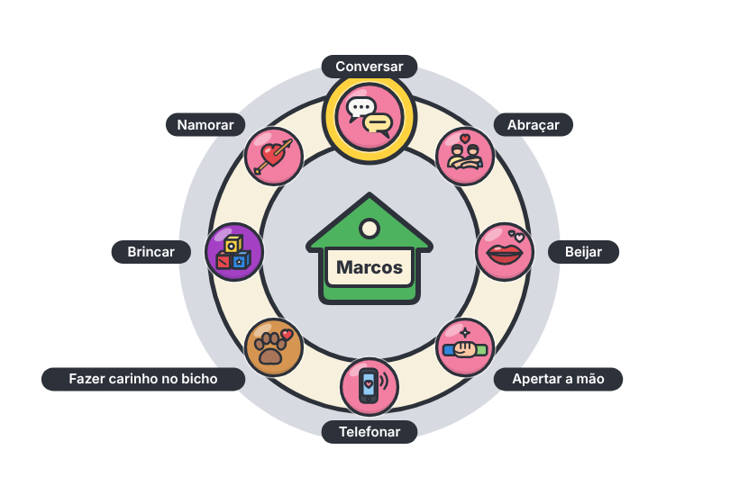
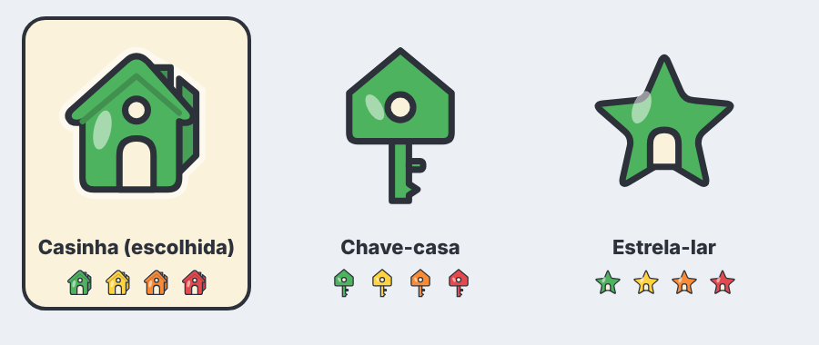

Carregando…
As necessidades do documento (fome, energia, bexiga, higiene, social e diversão) e as dos bebês (conforto, fralda e vínculo). A barra muda de cor em 5 estados conforme o nível. Arraste para ver.
Clique no morador para abrir o menu; passe o mouse (ou toque) num botão para ver o nome. O desenho é nosso: anel creme, botões redondos com a cor do grupo e a etiqueta em forma de casinha no meio.

menu_radial.svg e .png: o mesmo menu como imagem, para referência de layout (rótulos para fora do anel, a fatia apontada realçada em amarelo).
A casinha gira e flutua sobre a cabeça de quem você dirige. A cor segue o humor geral: verde (ótimo), amarelo (bom), laranja (ruim) e vermelho (péssimo).

Escolhida: a casinha.